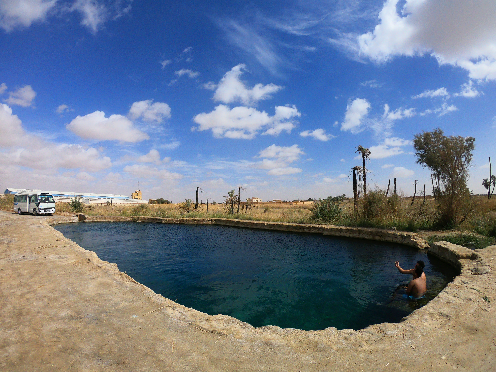
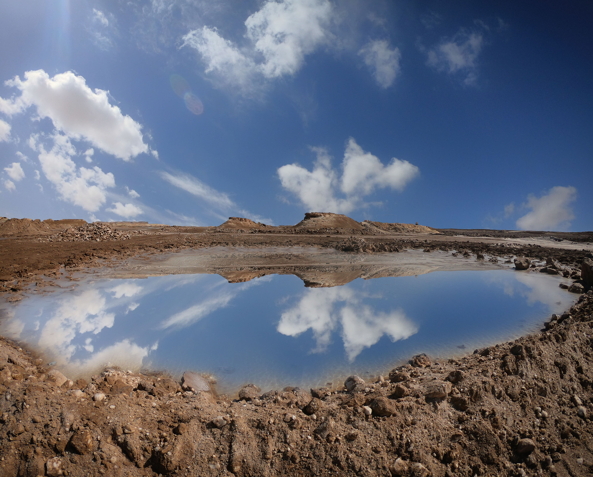
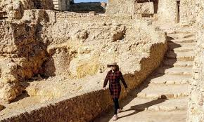

سيوة هي مدينة وواحة
مصرية في الصحراء الغربية، تبعد حوالي 300 كم عن ساحل البحر المتوسط إلى
الجنوب الغربي من مرسى مطروح، وتتبع محافظة مطروح إدارياً. ينتشر في أرجائها
الآبار والعيون التي تستخدم لأغراض الري والشرب وتعبئة المياه الطبيعية
والعلاج، وبها أربع بحيرات كبرى، فيما اكتشف بها عدة أماكن أثرية مثل معبد
آمون، الذي يشهد ظاهرة الاعتدال الربيعي مرتان كل عام، ومقابر جبل الموتى،
وأعلنت بها محمية طبيعية تبلغ مساحتها 7800 كم، تضم عدة أنواع لأشكال الحياة
الحيوانية والنباتية. يقطن الواحة ما يقارب من 35 ألف نسمة تقريباً، يعمل
أغلبهم بالزراعة أو السياحة. يسود المناخ القاري الصحراوي الواحة، فهي
شديدة الحرارة صيفاً، أما شتاؤها فدافئ نهاراً شديد البرودة ليلاً.
تشتهر سيوة بالسياحة العلاجية حيث يتوفر برمالها العناصر الطبيعية الصالحة لأغراض الطب البديل. فيما تعتبر
رحلات السفاري باستخدام
سيارات الدفع الرباعي من الرحلات المحببة لزائري الواحة. وتشير بعض الإحصائيات إلى أن سيوة تستقبل حوالي 30 ألف سائح سنوياً
من المصريين والأجانب. وصنفها عدد من المواقع الأجنبية والعَربية ضِمن أكثر 9 أماكن عُزلة على كوكب الأرض. للعمارة في سيوة
طابع خاص ومميز حيث تبنى المنازل التقليدية بحجر الكرشيف الذي يتكون من الملح والرمال الناعمة المختلطة بالطين، وتصنع
الأبواب والنوافذ من أخشاب شجر الزيتون والنخيل. وتعد فنون التطريز والصناعات الفخارية اليدوية من أميز الحرف التقليدية
بالواحة، والتي يأتي على رأسها صحون الطاجين، وأواني الطهي الصحراوية ذات الشكل الهرمي التقليدي والمزخرفة بشكل
جميل. ولأهل سيوة عيد خاص وهو عيد الحصاد الذي يحتفلون به عند اكتمال القمر بالسماء في شهر أكتوبر من كل عام.



التسمية
يرجح البعض أن اسم سيوة جاء من كلمة "سيخت آم" وتعني أرض النخيل، أو يعود
إلى
الاسم القديم "ثات". وسميت الواحة قديماً بأسماء عديدة منها "بنتا"، وقد وجد هذا الاسم في أحد النصوص المدونة في معبد إدفو،
وسُميت "بواحة آمون" حتى عهد البطالمة الذين سموها "واحة جوبيتر آمون"، وعرفها العرب باسم "الواحة الأقصى"، وهو الاسم
الذي ورد في خطط المقريزي. في حين أشار إليها ابن خلدون باسم "تنيسوة"، وهو اسم لفرع من قبائل الزنتانة في
شمال إفريقيا، كما أشار إليها الإدريسي باسم "سنترية"، وقال إنه يسكنها قوم خليط بين الامازيغ والبدو.
الجغرافيا والسكان
سيوة هي أحد منخفضات الصحراء الغربية التي شكلت واحة خضراء على مساحة 1088 كم. تبلغ مساحة مدينة سيوة 94263 كم² وتتبع محافظة مطروح، وتبعد 820 كم عن القاهرة و65 كم عن الحدود الليبية و300 كم غرب مرسى مطروح و600 كم عن غرب وادي النيل. يحدها شمالاً سلسلة من الجبال الصخرية، وجنوباً سلسلة من الكثبان الرملية، وتتمتع بمناخ معتدل طوال فصل الشتاء، وتنخفض عن مستوى البحر بـ18 متر، ما يجعل مياهها الجوفية قريبة ويسهل الانتفاع بها، والتي يقوم عليها زراعة النخيل وشجر الزيتون التي تنتج تموراً وزيتوناً من الأجود في مصر، ويتوسط الواحة أربع بحيرات مالحة هي بحيرة المعاصر شمال شرق الواحة وبحيرة الزيتون شرق الواحة وبحيرة سيوة غرب مدينه شالي وبحيرة المراقي غرباً. وتوجد العديد من الواحات المهجورة والمنخفضات التابعة لسيوة منها واحة شياطة على بعد 55 كم غرب سيوة، وواحة الملفي 75 كم شمال غرب سيوة، وواحة اللعرج، وواحة النوامسة، وواحة البحرين. يسود سيوة المناخ القاري الصحراوي فهي شديدة الحرارة صيفاً، أما شتاؤها فدافئ نهاراً شديد البرودة ليلاً، واخطر ما تتعرض له سيوة هو السيول.
سيوة هي أحد منخفضات الصحراء الغربية التي شكلت واحة خضراء على مساحة 1088 كم. تبلغ مساحة مدينة سيوة 94263 كم² وتتبع محافظة مطروح، وتبعد 820 كم عن القاهرة و65 كم عن الحدود الليبية و300 كم غرب مرسى مطروح و600 كم عن غرب وادي النيل. يحدها شمالاً سلسلة من الجبال الصخرية، وجنوباً سلسلة من الكثبان الرملية، وتتمتع بمناخ معتدل طوال فصل الشتاء، وتنخفض عن مستوى البحر بـ18 متر، ما يجعل مياهها الجوفية قريبة ويسهل الانتفاع بها، والتي يقوم عليها زراعة النخيل وشجر الزيتون التي تنتج تموراً وزيتوناً من الأجود في مصر، ويتوسط الواحة أربع بحيرات مالحة هي بحيرة المعاصر شمال شرق الواحة وبحيرة الزيتون شرق الواحة وبحيرة سيوة غرب مدينه شالي وبحيرة المراقي غرباً. وتوجد العديد من الواحات المهجورة والمنخفضات التابعة لسيوة منها واحة شياطة على بعد 55 كم غرب سيوة، وواحة الملفي 75 كم شمال غرب سيوة، وواحة اللعرج، وواحة النوامسة، وواحة البحرين. يسود سيوة المناخ القاري الصحراوي فهي شديدة الحرارة صيفاً، أما شتاؤها فدافئ نهاراً شديد البرودة ليلاً، واخطر ما تتعرض له سيوة هو السيول.
السكان
يقطن سيوة حوالي 35 ألف نسمة، تسكنها قبائل من أصول أمازيغية وهي الزناين، اللحمودات، الحدادين، أولاد موسى، أغورمي، الجواسيس، الشرامطة، السراحنة، المراقي، الشحايم، أم الصغير، الشهيبات، ولكل قبيلة شيوخ وعوائل وأفراد، والشيخ هو رأس القبيلة، ويكون من أكبرهم ومن الميسورين وحسن الخلق، وفي الغالب تكون المشيخة متوارثة، أما عوائل القبيلة فهم أعضاء مجلسها ويشترط أن يتمتعوا بحسن السيرة. ويختلف الباحثون حول أصولهم ما بين أصول شرقية عربية حميرية أو كنعانية أو أوروبية أو إغريقية أو هندأوروبية إلا أن أغلب الدراسات ترجح الأصل الإفريقي للأمازيغ. وترجح الحفائر الأثرية أن الأمازيغ دخلوا مصر في العصر الفرعوني المتأخر وكونوا فيها أسرهم وأطلق عليهم المصريون القدماء اسم "المشوش"، وحكموا مصر على يد زعيمهم "شيشنق الأول" وسقط حكمهم مع مرور الزمن وانحصروا في واحة سيوة واحتفظوا بعاداتهم وتقاليدهم ولغتهم.
يقطن سيوة حوالي 35 ألف نسمة، تسكنها قبائل من أصول أمازيغية وهي الزناين، اللحمودات، الحدادين، أولاد موسى، أغورمي، الجواسيس، الشرامطة، السراحنة، المراقي، الشحايم، أم الصغير، الشهيبات، ولكل قبيلة شيوخ وعوائل وأفراد، والشيخ هو رأس القبيلة، ويكون من أكبرهم ومن الميسورين وحسن الخلق، وفي الغالب تكون المشيخة متوارثة، أما عوائل القبيلة فهم أعضاء مجلسها ويشترط أن يتمتعوا بحسن السيرة. ويختلف الباحثون حول أصولهم ما بين أصول شرقية عربية حميرية أو كنعانية أو أوروبية أو إغريقية أو هندأوروبية إلا أن أغلب الدراسات ترجح الأصل الإفريقي للأمازيغ. وترجح الحفائر الأثرية أن الأمازيغ دخلوا مصر في العصر الفرعوني المتأخر وكونوا فيها أسرهم وأطلق عليهم المصريون القدماء اسم "المشوش"، وحكموا مصر على يد زعيمهم "شيشنق الأول" وسقط حكمهم مع مرور الزمن وانحصروا في واحة سيوة واحتفظوا بعاداتهم وتقاليدهم ولغتهم.